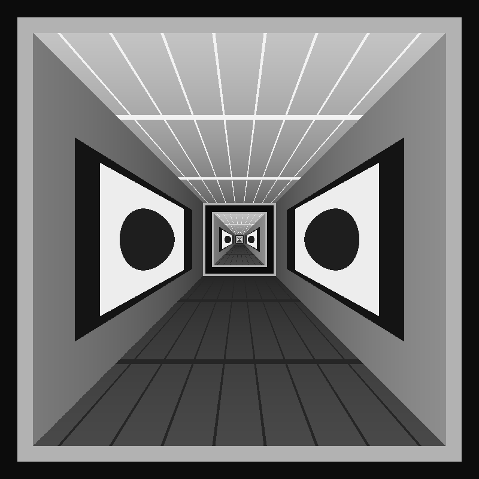

The conformal "Droste" map behind Escher's Print Gallery
(de Smit & Lenstra). Drag the rectangle to mark the
shrunk copy of the picture inside itself; that defines the
self-similarity factor q and its fixed point F, and
the twist is output(z) = input(zα),
α = 1 − i·ln q/2π.
